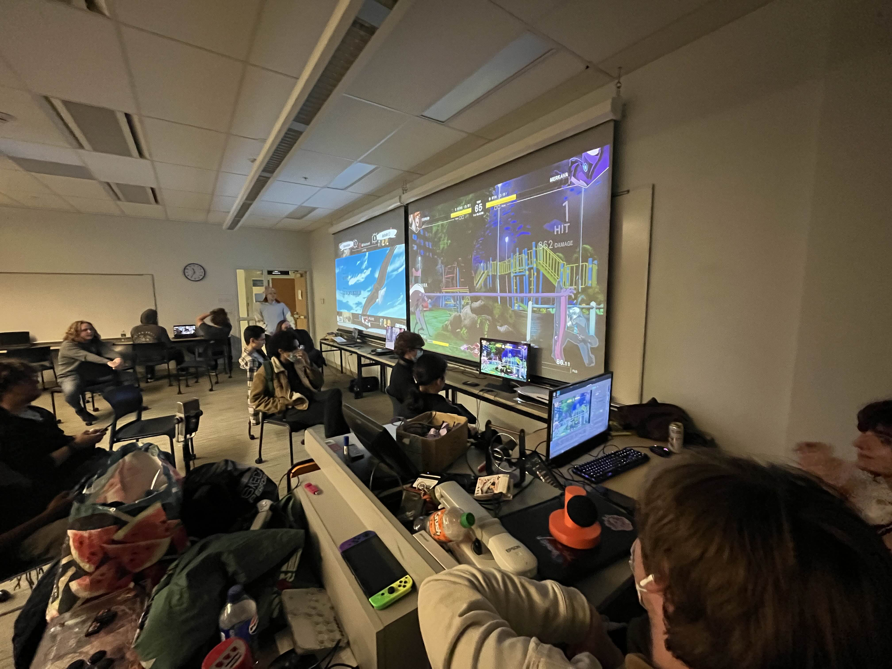
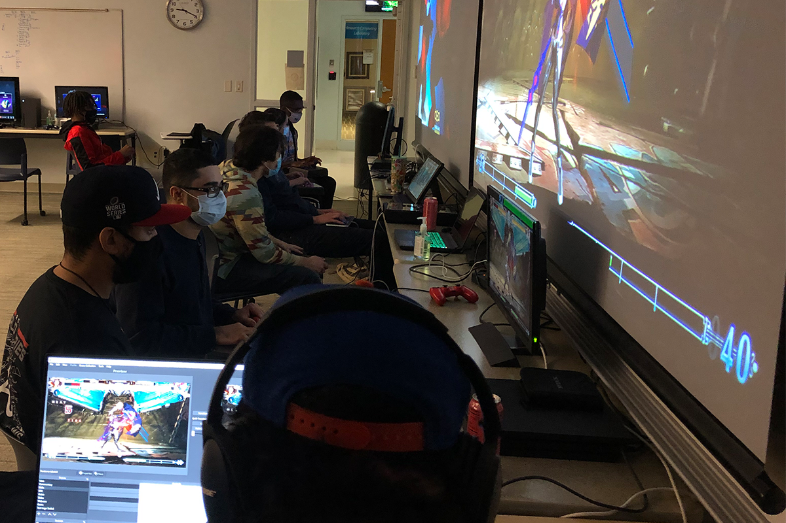
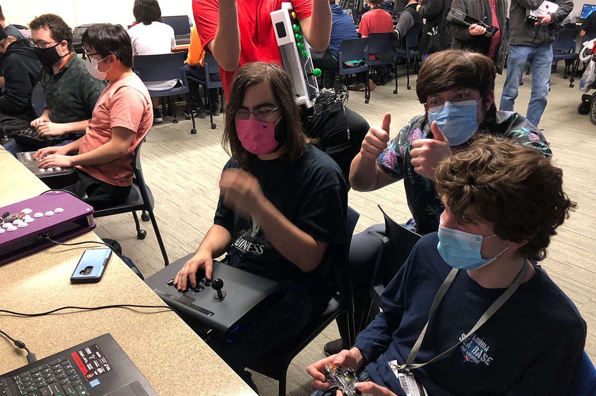
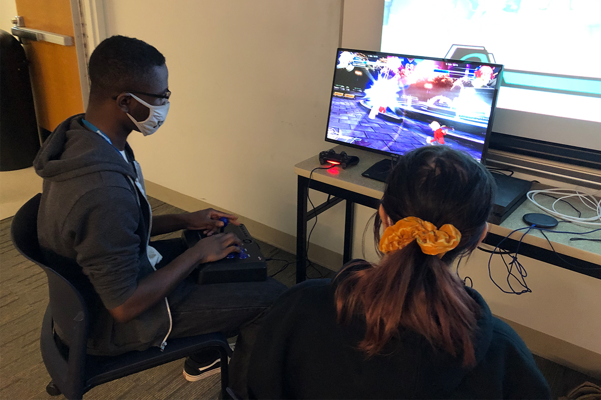
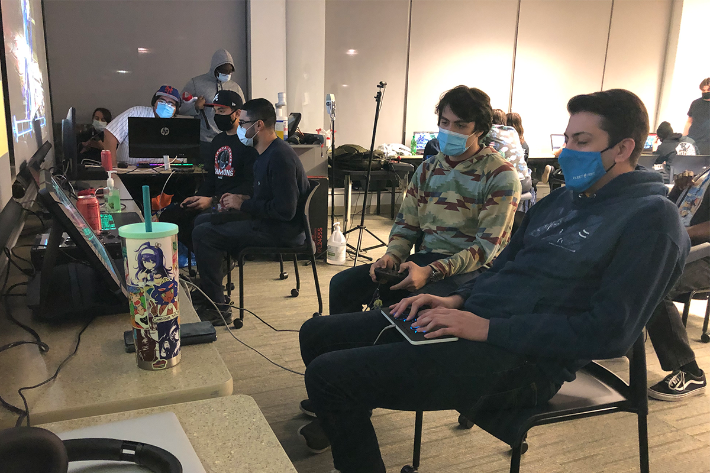
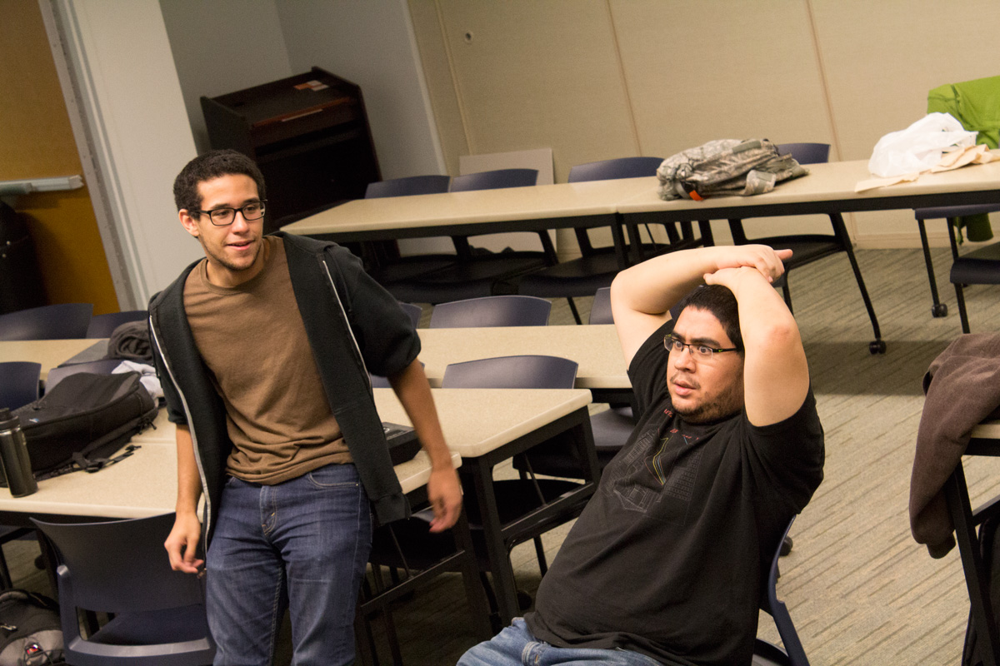

GBN Slam
1st game of the GBN Slam between Team Chud and Team Pepapiglet

Team Chud Hudle
Team Chud led by Coach Cboy preparing to go 0-2.

King of Fight (Ps4)
Pubert vs King of Fight (Ps5) in the Fight (Ps4) extra monthly bracket grand finals.

Team BestByak
Winning team of the GBN Slam led by Coach "BestByak" "Northeast Wish" Wish

Reverse 6-0
Vice President ChunkEMunkE getting reverse 6-0d by President GBN in UNI2

Blazblue: Central Fiction Tournament
Grand finals for our weekly Blazblue ranbats

Casual Awesomeness
Three homies playing Million Arthur: Arcana Blood

Melty Blood Schmix
The life long question: What's the mix? They will soon find out

Club in Full Swing
I tried to take a nice picture and Paul had the audacity to blink

ST Blowup
Two guys chilling when something awesome happened in Super Street Fighter II Turbo